哈啰大家好这里是mc为大家带来的Battleground游记，偷偷告诉大家我是背着Alina去的哈哈哈哈哈 那废话不多说我们直接进入正题 由于mc的设备有限哈，所以照片不是那么高清 凑合着看吧
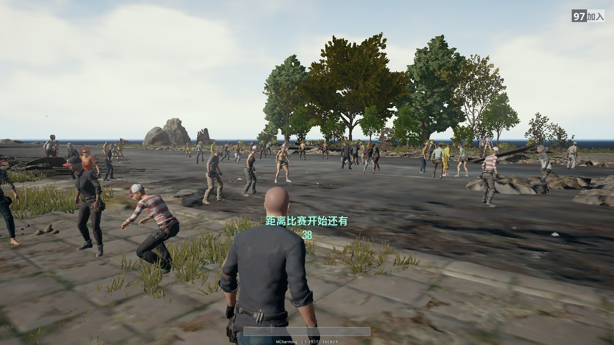上岛之前所有游客都要在这里候机，不得不说这里的人真穷 连个像样的候机楼都没有，大家干脆就在跑道等着上飞机
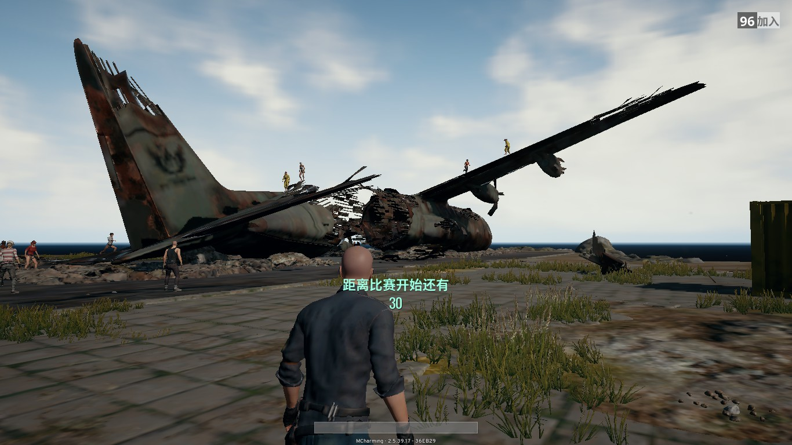跑道尽头有一架坏掉的也不拿去修，都生锈了
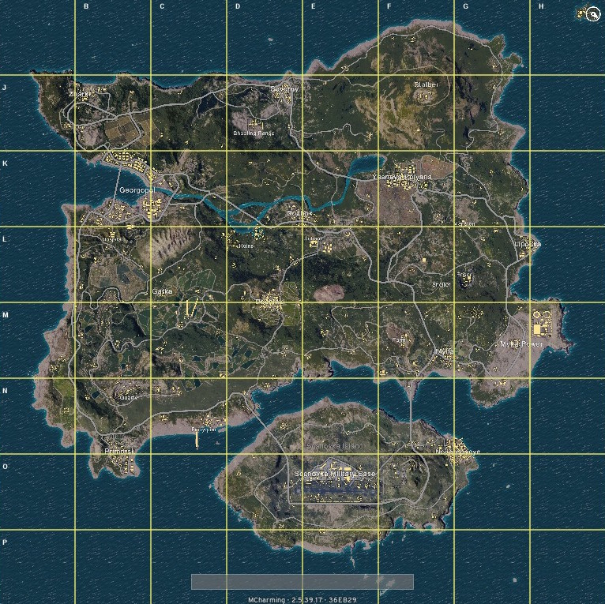候机的时候觉得无聊拿了张岛上的地图，给你们看看 候机处在东北角 说起这个岛，大部分人都只知道它的绰号 叫Playerunknown's Battlegrounds 其实它的大名，叫Erangel 不信就点图片
还好这里准点率是100% 基本上等1分钟就可以上飞机了，值得一提的是这趟航班是免费的 所以服务自然可以想象的到，没有空姐，也没有飞机餐
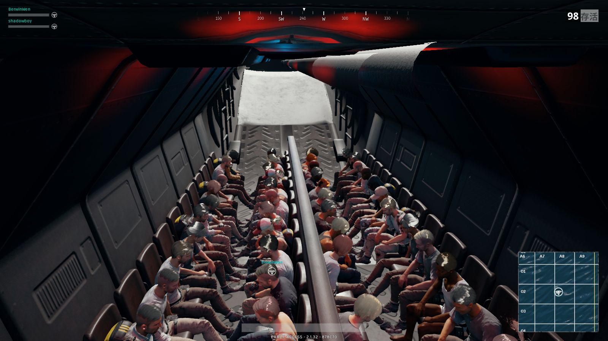飞机内部的样子，所有人都排排坐，没有头等舱
在这里，所有的航班都是不会降落的 但是起飞前很贴心的给每位乘客发了一个降落伞包 mc提醒大家一定一定要全程把伞包都背着，不然到时候下飞机忘带了就gg了 而且这里的人很mean你老是不下飞机就会把你扔下去，不管你有没有伞
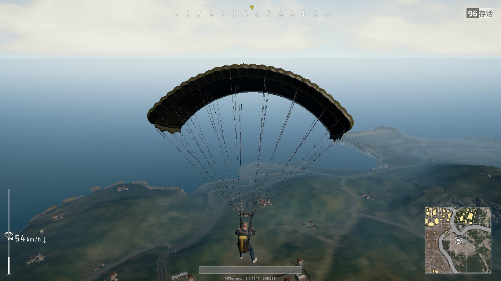在哪里下飞机是乘客自己决定的，舱门打开以后自己跳下去就好了 mc向来是不喜欢跟别人挤的，所以先选一些冷门的景点
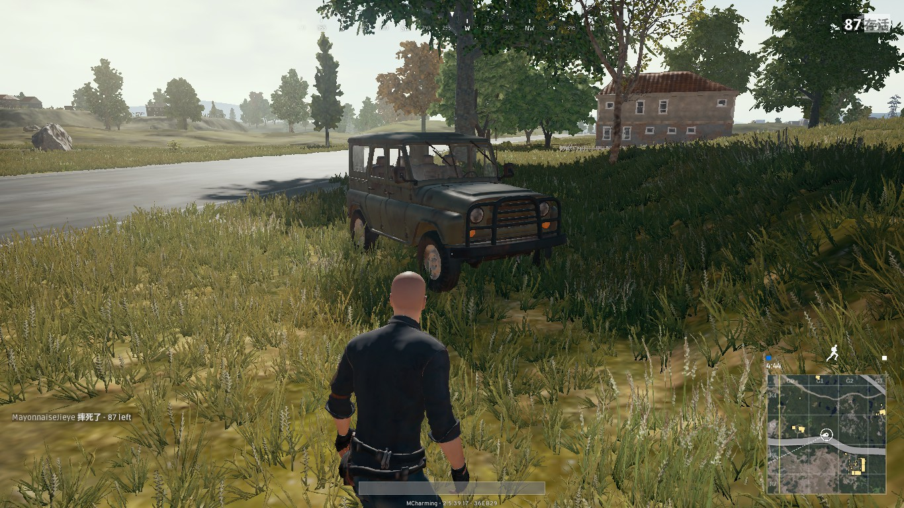降落在了路边，不得不说这里的人是非常淳朴的 车停在路边坐上去就开走不会锁车，想必是想着游客们徒步会很累吧
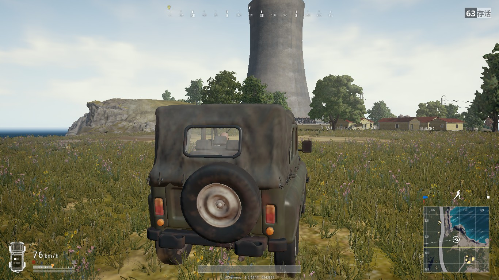岛上的汽车都是自主研发的，像我驾驶的这辆uaz吉普车，性能优越
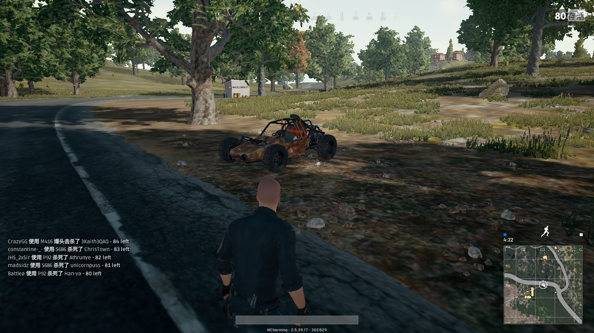还有buggy越野车，噪音巨大，开起来很拉风
Lipovka坐落于岛的最东边，城市不大，南面有三间仓库 居民楼多数是单层结构，有少量复式
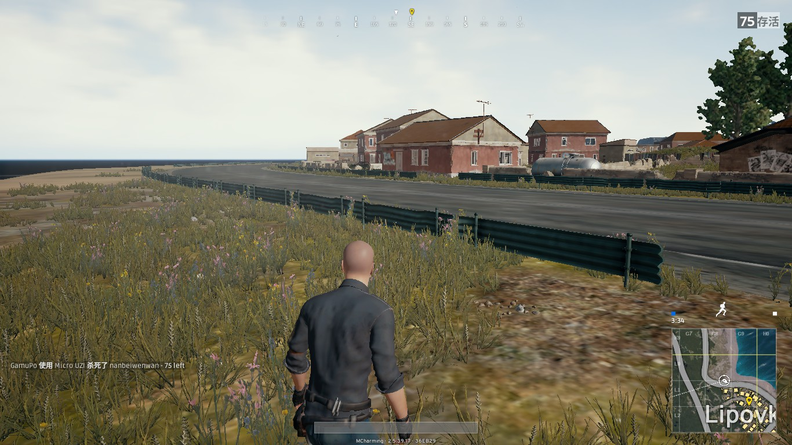在城边下了车，可以看到这里的居民楼大多数都是红色，非常显眼
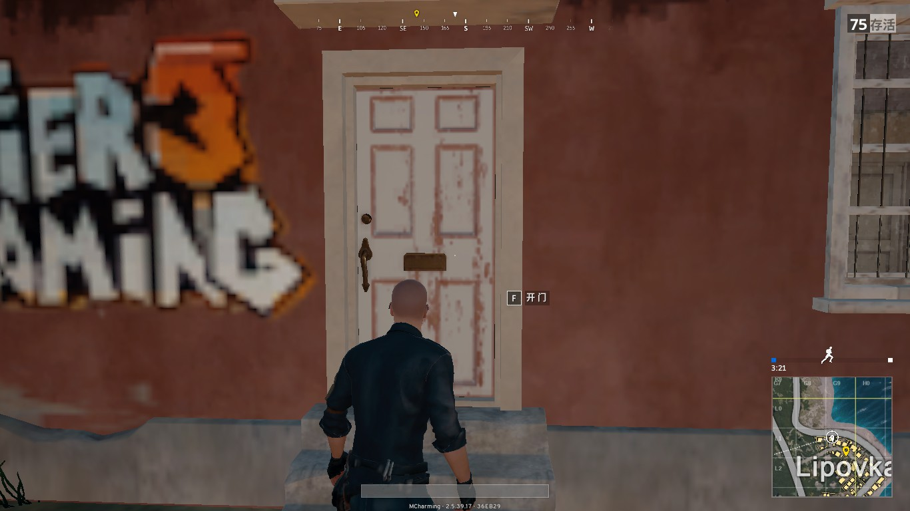岛上的居民因为旅游旺季都到别处度假了，但是他们都忘了锁门 可以进去参观一下

感觉这里的人都很不讲卫生，刚进门就看到衣服随意地扔在地上 不敢相信，这还能穿么 还有防毒面具，感觉这一家子不一般
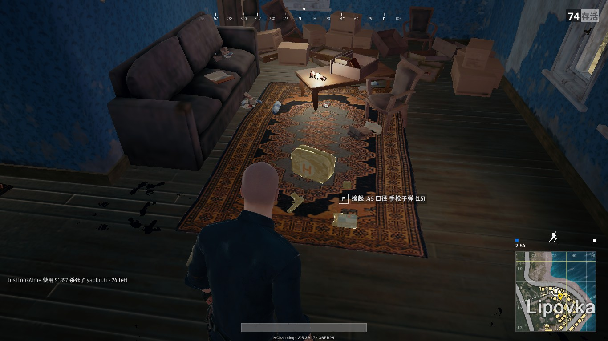来到二楼 这家人很贴心准备了急救包，不过我觉得我不会用上吧

从那家后门跑出来看到了一家餐厅，不过看起来很破旧的样子
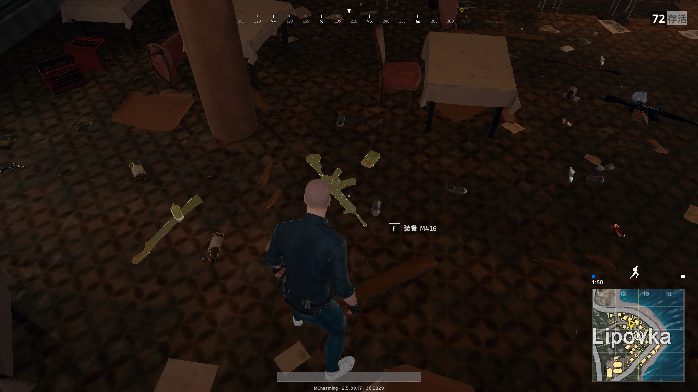里面没有服务员，也没有吃的 不过这家餐厅的装备到挺先进的 我想可能平时这里治安不太好吧
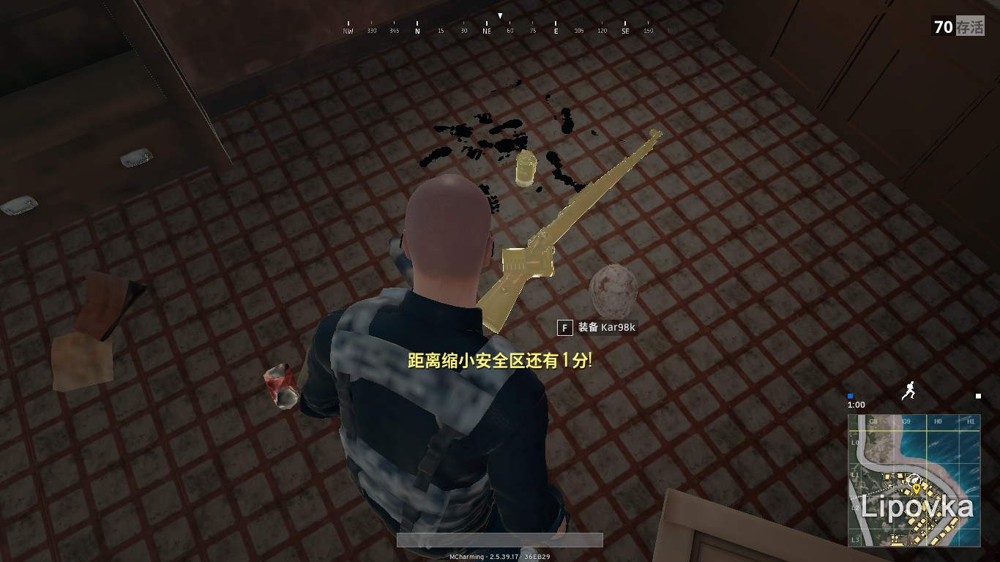后面的厨房里还有一把古董枪 这里的厨师想必是收藏高玩
从Lipovka向南进发就到了Mylta Power 顾名思义这里是这个岛的能源中心
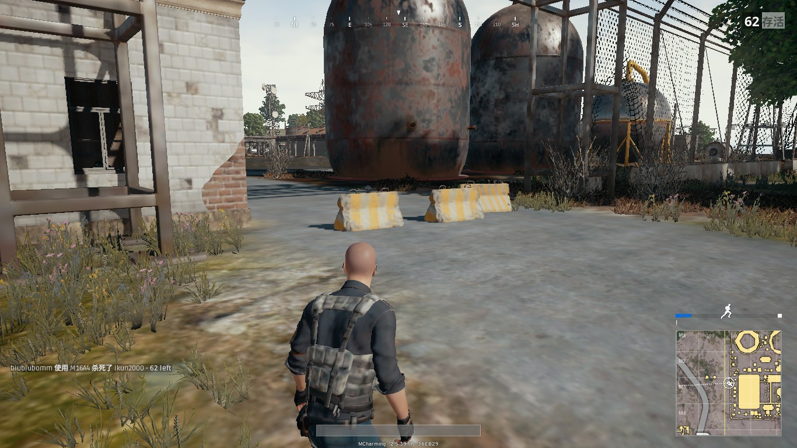大门口设置了路障，只能下车徒步进去了
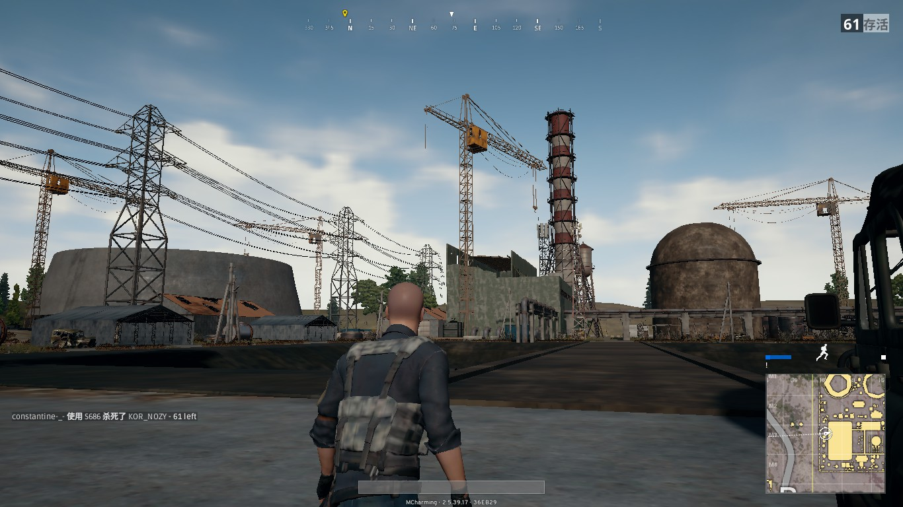还没有建好 不过建好了的话整个岛的电力就可以自给自足了 非常有远见，根本不需要进口能源